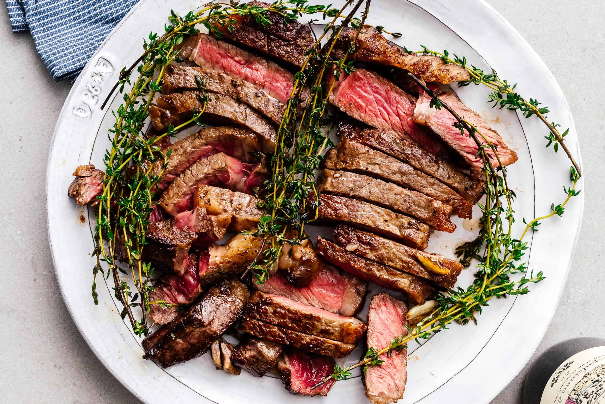

Steak

A Perfectly Cooked Medium-Rare Steak
Enjoy this steak with a glass of red wine!
Ingredients
- Rib Eye Steak
- Butter
- Rose Mary
- Salt
- Pepper
Steps
- Season the stea with salt & pepper
- Sear the steak in a cast iron pan with butter.
- Add rose mary to the butter and baste until cooked to medium-rare
- Let rest for 30 minutes then slice into strips and enjoy!
Return to main page